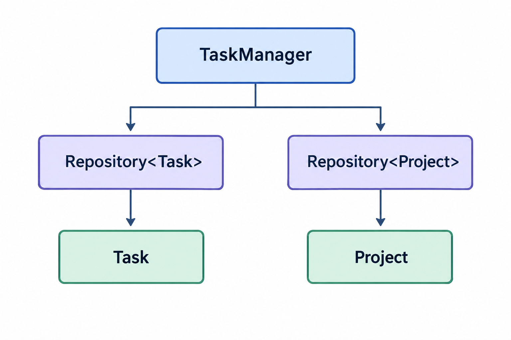

Менеджер задач
Скачайте подготовленный проект Task Manager.
Сформировать практические навыки реализации абстрактных типов данных в соответствии с заданной спецификацией с помощью классов C++ и шаблонов классов
Task).Repository<T>) с использованием шаблона класса C++.TaskManager, обеспечивающий управление задачами и проектами.В лабораторной работе разрабатывается приложение Task Manager — небольшая система для управления задачами и проектами. Пользователь может создавать задачи, изменять их название, описание, статус и приоритет, удалять задачи, а также работать со списком проектов.
Графический интерфейс уже подготовлен. Вам не требуется разрабатывать окна, кнопки, поля ввода или таблицы интерфейса. Основная работа выполняется в классах предметной области и в их модульных тестах.
TaskОписывает одну задачу. Хранит её данные и предоставляет операции для получения и изменения этих данных.
Отвечает за: данные одной задачи.
Repository<T>Обобщённое хранилище объектов одного типа. Реализует добавление, удаление, изменение, получение всех объектов, подсчёт количества и очистку.
Отвечает за: хранение объектов.
TaskManagerКласс верхнего уровня предметной области. Управляет задачами и проектами, создаёт объекты с идентификаторами и обращается к соответствующим репозиториям.
Отвечает за: управление задачами и проектами.
Вам предоставляется готовый проект с графическим интерфейсом. Интерфейс и класс Project уже реализованы. Вам необходимо самостоятельно реализовать только Task, Repository<T> и TaskManager.
| Файл | Содержание |
|---|---|
Task.h | Поля класса Task и объявления методов по приведённому каркасу. |
Task.cpp | Реализация конструктора, методов получения и методов изменения данных. |
Repository.h | Шаблон класса Repository<T>, поле items и реализация всех методов. |
TaskManager.h | Поля TaskManager и объявления методов управления. |
TaskManager.cpp | Реализация конструктора и методов управления задачами и проектами. |
Project.h/.cpp | Готовый тип Project. Реализовывать и изменять его не требуется. |

Графический интерфейс взаимодействует с TaskManager. TaskManager использует два экземпляра одного шаблона Repository<T>.
Task в Task.h и Task.cpp по приведённому каркасу и спецификации.Repository<T> в Repository.h. Для проверки использовать как минимум Repository<Task> и Repository<Project>.TaskManager в TaskManager.h и TaskManager.cpp, используя Repository<Task> и Repository<Project>.
Для сборки проекта используется
CMake.
Все необходимые настройки находятся в файле
CMakeLists.txt.
Для сборки проекта требуется:
Проект содержит готовый графический интерфейс пользователя, реализованный с использованием библиотеки FLTK (Fast Light Toolkit).
Графический интерфейс позволяет работать с задачами и проектами: просматривать списки, добавлять, изменять и удалять объекты.
Откройте терминал в корневой папке проекта и выполните:
cmake -S . -B build cmake --build build
Первая команда выполняет настройку проекта и создаёт
каталог build.
Вторая команда выполняет компиляцию исходного кода.
После успешной сборки запустите приложение
TaskManager_FLTK.
TaskТип Task описывает одну задачу. Вам необходимо самостоятельно объявить и реализовать этот класс.
Класс Task должен содержать следующие приватные поля:
id — идентификатор задачи, целое число;title — название задачи, строка;description — описание задачи, строка;status — статус задачи, строка;priority — приоритет задачи, строка.status может принимать только значения "Todo", "In Progress", "Done".
priority может принимать только значения "Low", "Medium", "High".
Task.hНиже приведён только каркас класса. Реализацию методов необходимо написать самостоятельно.
#ifndef TASK_H
#define TASK_H
#include <string>
class Task
{
private:
int id;
std::string title;
std::string description;
std::string status;
std::string priority;
public:
Task(int id, std::string title);
int GetId();
std::string GetTitle();
std::string GetDescription();
std::string GetStatus();
std::string GetPriority();
void SetTitle(std::string title);
void SetDescription(std::string description);
void SetStatus(std::string status);
void SetPriority(std::string priority);
};
#endif
Task(int id, string title)id переданный идентификатор; присвоить title переданное название; установить description в пустую строку; установить status в "Todo"; установить priority в "Medium".Task.GetId()Task существует.id.GetTitle()Task существует.title .GetDescription()Task существует.description.GetStatus()Task существует.status.GetPriority()Task существует.priority .SetTitle(string title)title переданным значением.GetTitle() возвращает новое название.SetDescription(string description)description переданным значением.GetDescription() возвращает новое описание.SetStatus(string status)"Todo", "In Progress" или "Done".status новым значением.GetStatus() возвращает переданный статус.SetPriority(string priority)"Low", "Medium" или "High".priority новым значением.GetPriority() возвращает переданный приоритет.Repository<T>Шаблонный класс Repository<T> хранит последовательность объектов одного выбранного типа T. Вам необходимо самостоятельно объявить и реализовать этот шаблонный класс.
Класс должен содержать следующее приватное поле:
items — объект типа std::vector<T>, содержащий объекты репозитория.Конкретный тип T определяется при создании объекта. Например, Repository<Task> хранит задачи, а Repository<Project> — проекты.
Repository.hШаблон полностью реализуется в заголовочном файле. Ниже приведён каркас без реализации методов.
#ifndef REPOSITORY_H
#define REPOSITORY_H
#include <vector>
template <class T>
class Repository
{
private:
std::vector<T> items;
public:
void Add(T item);
void Remove(int index);
void Update(int index, T item);
int Size();
std::vector<T> GetAll();
void Clear();
};
#endif
Add(T item)item типа T.item в конец вектора items с помощью операции push_back.Remove(int index)index.index находится в диапазоне от 0 до Size()-1.items с указанным индексом. Для удаления элемента из std::vector использовать erase.Update(int index, T item)index и новый объект item типа T.index находится в диапазоне от 0 до Size()-1.items[index] переданным объектом item.index заменён; количество объектов не изменилось.Size()items с помощью size() и вернуть это значение.GetAll()items.std::vector<T>, содержащий все объекты репозитория в текущем порядке.Clear()items с помощью clear().Size() возвращает 0.TaskManager является классом, через который графический интерфейс работает с задачами и проектами. Он не хранит объекты непосредственно в std::vector, а использует два экземпляра шаблонного репозитория.
Вам необходимо самостоятельно объявить следующие приватные поля:
taskRepository — объект типа Repository<Task> для хранения задач;projectRepository — объект типа Repository<Project> для хранения проектов;nextTaskId — целое число для идентификатора следующей задачи;nextProjectId — целое число для идентификатора следующего проекта.Project уже предоставляется в готовом проекте; реализовывать его не требуется.TaskManager.hНиже приведён каркас заголовочного файла. Реализацию методов необходимо написать в TaskManager.cpp.
#ifndef TASKMANAGER_H
#define TASKMANAGER_H
#include <string>
#include <vector>
#include "task.h"
#include "project.h"
#include "repository.h"
class TaskManager
{
private:
Repository<Task> taskRepository;
Repository<Project> projectRepository;
int nextTaskId;
int nextProjectId;
public:
TaskManager();
void AddTask(std::string title,
std::string description,
std::string priority,
std::string status);
void UpdateTask(int index,
std::string title,
std::string description,
std::string priority,
std::string status);
void DeleteTask(int index);
std::vector<Task> GetTasks();
void AddProject(std::string name);
void DeleteProject(int index);
std::vector<Project> GetProjects();
};
#endif
Task, затем Repository<T>, и только после этого TaskManager. Методы TaskManager должны использовать уже готовые операции репозитория.TaskManager()nextTaskId и nextProjectId в 1. Репозитории должны быть пустыми. Если в предоставленном проекте предусмотрены начальные демонстрационные задачи и проекты, добавить их после инициализации счётчиков.TaskManager.AddTask(string title, string description, string priority, string status)priority — "Low", "Medium" или "High"; status — "Todo", "In Progress" или "Done".nextTaskId как идентификатор новой задачи; 2) создать Task с этим идентификатором и title; 3) установить описание, приоритет и статус; 4) добавить задачу в taskRepository с помощью Add; 5) увеличить nextTaskId на 1.taskRepository; её идентификатор равен старому значению nextTaskId; nextTaskId увеличен на 1.Один из возможных вариантов реализации:
void TaskManager::AddTask(std::string title,
std::string description,
std::string priority,
std::string status)
{
Task task(nextTaskId, title);
nextTaskId++;
task.SetDescription(description);
task.SetPriority(priority);
task.SetStatus(status);
taskRepository.Add(task);
}
UpdateTask(int index, string title, string description, string priority, string status)index находится в диапазоне от 0 до GetTasks().size()-1; приоритет и статус имеют допустимые значения.taskRepository; 2) взять задачу с индексом index; 3) изменить у этой задачи название, описание, приоритет и статус с помощью методов Task; 4) передать изменённую задачу в taskRepository.Update(index, task).DeleteTask(int index)index находится в диапазоне от 0 до GetTasks().size()-1.Remove(index) для taskRepository.GetTasks()GetAll() у taskRepository и вернуть полученный вектор.std::vector<Task> со всеми задачами в текущем порядке.AddProject(string name)nextProjectId; 2) создать Project с этим идентификатором и названием name; 3) добавить проект в projectRepository с помощью Add; 4) увеличить nextProjectId на 1.projectRepository; nextProjectId увеличен на 1.DeleteProject(int index)index находится в диапазоне от 0 до GetProjects().size()-1.Remove(index) для projectRepository.GetProjects()GetAll() у projectRepository и вернуть полученный вектор.std::vector<Project> со всеми проектами в текущем порядке.private и public?T?T?